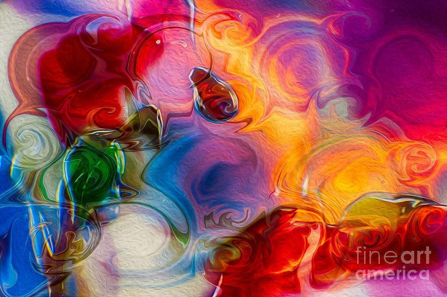

The Library · Omaste Witkowski
Liquid Glass Swirls That Seem Lit From Within
Ribbon Blaze is a horizontal abstract of glossy red, gold, magenta and cobalt ribbons that look like poured glass over a fine canvas-like grain.

Choose your size, paper, canvas, metal or frame. Printed, shipped and guaranteed by Fine Art America.
Picture a wall filled with ribbons of color that look like liquid glass. Red, orange-gold, magenta and cobalt blue loop and curl across the whole surface, with thin bright edges and glossy highlights.
This is Ribbon Blaze. It has no landscape, no figure and no single focal point to settle on. It is bright color in motion, and that is reason enough to want it.
Choose Your PrintMade to order by Fine Art America · 30-day money-back guarantee
What Your Eye Finds in Ribbon Blaze
I can't give you a backstory for this piece, so I'll tell you what I see when I look at it. Look at the edges first. Each swirl is outlined in a thin bright line, and where two ribbons overlap you can see through one into the other. That is why the color looks lit from within instead of flat on the surface.
Then look underneath. A fine, regular grain, like canvas or brushed relief, runs across the entire image. The swirls are smooth and reflective, and the ground beneath them is soft and textured. That contrast gives the surface two layers, and it keeps the saturated color from feeling flat.
Now follow the movement. Tendrils and spirals sweep from the lower left up toward the warm orange-yellow mass in the center and right. Small teardrop shapes near the middle act as places to rest, and then the eye is off again. Heavy reds sit in the upper left and lower right, cooler blue, violet and green gather at the left and lower center, and creamy white patches give the color room to breathe.
What to Look For
- Glassy swirls with thin bright edges: they read as liquid glass or molten paint, so the color has depth and shine.
- Translucent overlaps where ribbons cross: the colors seem lit from within, which keeps the saturation lively instead of muddy.
- A fine canvas-like grain under the whole image: it adds a soft, tactile layer that sets the glossy forms apart from flatter colorful abstracts.
- Curls, spirals and small teardrops with no single focal point: the eye keeps circling, so the piece rewards a second and third look.
- Red, orange-gold, magenta and cobalt, relieved by emerald green and creamy white: a warm, high-energy palette with light, open places to rest.
Where It Lives
Ribbon Blaze is horizontal and full-bleed, so it suits a wide wall: above a sofa, a bed, a sideboard or a desk. It also works in an open room that needs one warm, high-energy piece to carry the space.
The mood is lively, playful and celebratory. The color is bold, and the creamy white passages keep it from feeling heavy.
- This is for you if you want a bold colorful abstract that holds a wide wall without needing a focal point.
- This is for you if you like glossy, glass-like color more than flat or muddy abstracts.
- This is for you if a warm palette of red, gold and magenta with cobalt blue sounds like the right energy for your room.
- This is for you if you simply love how it looks. That is a good enough reason.
Choose Your Print on Fine Art America
- Pick the size, paper, canvas, metal or frame that suits your wall.
- Your print is made to order by Fine Art America, not pulled from a shelf.
- It ships from their facility, typically within a few business days.
- A 30-day money-back guarantee from Fine Art America applies to your purchase.
- The listing title is Ribbon Blaze - Glossy Swirls in Red, Gold and Blue, with the same image you see here.
Choose Your PrintMade to order by Fine Art America · 30-day money-back guarantee
Questions before you choose
Will the print look exactly like what I see on my screen?
Screens vary, so I can't promise an exact match. The piece is built on saturated color and glossy highlights. If the print isn't what you hoped for, Fine Art America's 30-day money-back guarantee applies.
Is the canvas texture real or part of the image?
The fine grain is part of the image itself. How a print feels in your hands depends on the paper, canvas, metal or frame you choose on the listing.
What size should I pick?
The listing shows the sizes available. For a horizontal piece like this, think of the wall width above your sofa, bed or console and choose a size that fits it comfortably.
Imagine the wall with this on it: ribbons of red and gold curling toward the center, cobalt and violet cooling the lower corner, and a bright, glassy shine that changes as you move through the room.
If you want that on your wall, open the listing, choose your size and material, and order your print.
Choose Your PrintMade to order by Fine Art America · 30-day money-back guarantee
Find your own piece with the art adventure · Ask the gallery what fits your wall